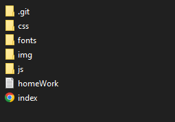

Нам предстоит сверстать сайт-визитку по psd макету. Мы сделаем:
CMS - система управления контентом - программа созданная для того, чтобы заказчик мог регулировать контент на сайте, не обращаясь к программисту и не залезая в код
Ввиду того, что на разных браузерах использовались разные стандарты, сайт может на разных устройствах и браузерах выглядеть по разному поэтому нужно всегда проверять свой сайт в работе с разными популярными браузерами
В материалах к уроку есть все файлы.
Сам пользуюсь VScode c плагинами:
Внутри данных папок может быть вот такая система как на картинке или любая другая в зависимости от проекта или от используемых технологий
